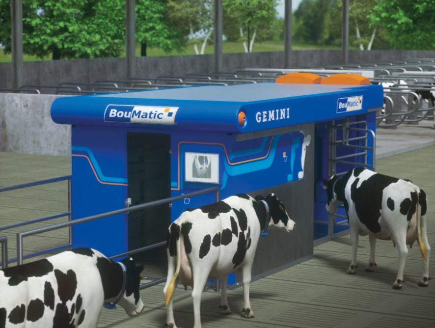

04 juin 2020
Boumatic lance son nouveau robot de traite baptisé gemini. Disponible en version simple ou double stalle, il peut traire deux vaches en même temps. Ses coûts de service sont réduits et transparents grâce à un contrat personnalisé. Un centre d’appels, avec une assistance disponible 24 h/24 et 7 j/7, sécurise également son utilisation.
Ce robot de traite nouvelle génération se distingue par un système d’identification rapide des vaches. Le suivi de leurs problèmes de santé est facilité grâce à l’extension de la mesure automatique du comptage des cellules somatiques. Avec Gemini, Boumatic reste fidèle à son concept de traite par l’arrière ; le constructeur américain a juste revu le système de pompe à vide. Un système de guidage de tuyau intelligent permet de garantir un positionnement correct des gobelets trayeurs sous la vache. Le nouveau robot reprend également les atouts de la précédente génération, à savoir sa compacité, sa salle technique intégrée à la stalle et la technologie Plug & Play. Le logiciel de gestion du robot est intuitif, riche en informations et doté d’une technologie de caméra temps de vol pour une fixation rapide et précise. Le nouveau robot Gemini est disponible en version standard, en simple stalle, mais également en version double stalle pour traire deux vaches en même temps. Pour chaque élevage laitier, le projet débute avec un plan d’aménagement personnalisé, afin de s’assurer d’une bonne circulation des vaches dans le bâtiment et d’une bonne fréquentation. Les possibilités de sélection des animaux en fin de traite sont flexibles et intelligentes et permettent de gérer 2 ou 3 voies sans clôture ou barrière supplémentaire.
Article original : Ici